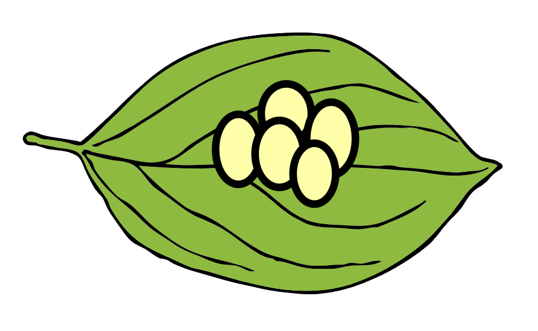
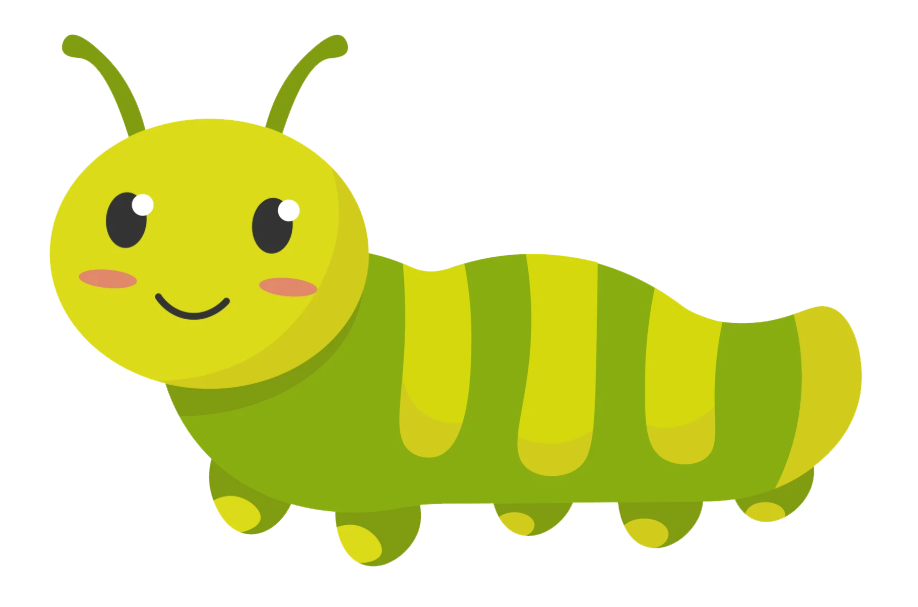
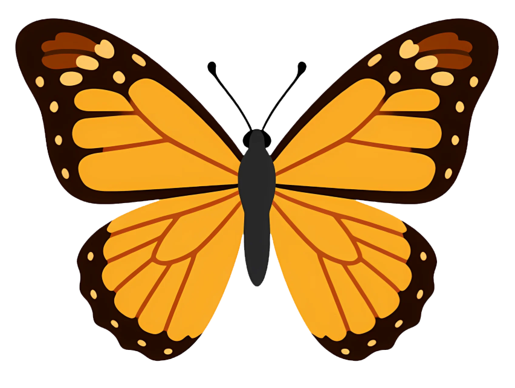
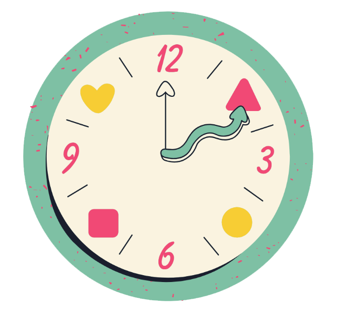

The Amazing Metamorphosis
A butterfly does not begin life with wings. It goes through four amazing stages before becoming the beautiful insect we see in gardens. A life cycle is the series of changes a living thing goes through as it grows and develops.
The Four Stages

1Egg
A butterfly begins as a tiny egg. The mother butterfly usually lays her eggs on a plant. The egg protects the baby butterfly as it develops inside.

2Larva
(Caterpillar)
When the egg hatches, a caterpillar comes out. Its main job is to eat and grow. It eats leaves and sheds its old skin as its body becomes bigger.
Pupa
(Chrysalis)
After growing, the caterpillar forms a pupa, often called a chrysalis. Inside, the insect changes as it develops into an adult butterfly.

4Adult Butterfly
The adult butterfly comes out of the chrysalis. Its wings expand and dry before it flies. It can visit flowers, drink nectar, and reproduce to begin the cycle again.

How does the butterfly change?
The changes a butterfly goes through are called metamorphosis. It is a special kind of development in which the animal’s body changes from one stage to another.
Fun Butterfly Facts!

Did You Know?
Butterflies taste with their feet! Their feet have special sensors that help them check whether a plant is suitable for laying eggs or feeding.

How Long Do Butterflies Live?
Some adult butterflies live only a short time, while others can live for several months. It depends on the species and conditions.
How Do Butterflies Find Food?
Butterflies drink nectar. They use a long, tube-like mouthpart called a proboscis to sip liquid food from flowers.
Caterpillars Eat Leaves!
Many caterpillars eat the leaves of particular host plants while they grow.
Butterflies Help Flowers Grow
As butterflies visit flowers, pollen may stick to their bodies and be carried to other flowers. This helps pollination.

Butterfly Wings Have Tiny Scales
The colorful patterns on butterfly wings are made by thousands of tiny scales.